5 Bayes’ Rule and the Grid Method
5.1 The Big Bayesian Idea
- Model specifies
\[\begin{align*} \mbox{prior: } \quad & p(\mbox{parameter values}) \\ \mbox{likelihood: } \quad & p(\mbox{data values} \mid \mbox{parameter values}) \end{align*}\]
- Bayes rule + data gives
\[\begin{align*} \mbox{posterior: } \quad & p(\mbox{parameter values} \mid \mbox{data values}) \end{align*}\]
Let’s let \(D\) be the data values and \(\theta\) the parameter values. So the prior is \(p(\theta)\), and the posterior is \(p(\theta \mid D)\). Recall that
\[\begin{align*} p(D, \theta) &= p(\theta) \cdot p(D \mid \theta) \\ &= p(D) \cdot p(\theta \mid D) \\[3mm] p(D) \cdot p(\theta \mid D) &= p(\theta) \cdot p(D \mid \theta) \end{align*}\]
Solving that last equation for \(p(\theta \mid D)\) gives
\[\begin{align*} p(\theta \mid D) &= \frac{ p(\theta) \cdot p(D \mid \theta)}{p(D)} \\ &= \frac{ p(\theta) \cdot p(D \mid \theta)}{\sum_{\theta^*} p(\theta^*) p(D \mid \theta^*)} \mbox{or} \frac{ p(\theta) \cdot p(D \mid \theta)}{\int p(\theta^*) p(D \mid \theta^*) \; d\theta^*} \\ \end{align*}\]
Important facts about the denominator:
- The denominator sums or integrates over all possible numerators.
- The denominator depends on \(D\) but not on \(\theta\).
- So it is just a normalizing constant that guarantees that total probability is 1 for the posterior distribution. That is, it converts the kernel into a pdf.
- If we only need a kernel, we don’t need to compute the denominator.
Another way of saying all this is that
\[\begin{align*} p(\theta \mid D) &\propto p(\theta) \cdot p(D \mid \theta) \\[3mm] \mbox{posterior} & \propto \mbox{prior} \cdot \mbox{likelihood} \\[3mm] \mbox{kernel of posterior} &= \mbox{prior} \cdot \mbox{likelihood} \end{align*}\]
That last line is worth repeating. It’s the most important equation in this course:
\[ \LARGE \mbox{(kernel of) posterior} = \mbox{prior} \cdot \mbox{likelihood} \]
5.1.1 Likelihood
For a fixed data set \(D\), \(p(\theta)\) and \(p(\theta \mid D)\) are pdfs (or pmfs) describing the prior and posterior distributions of \(\theta\).
The likelihood function is different. If we consider \(p(D \mid \theta)\) to be a function of \(D\), it is not a pdf or pmf, and the total area under the curve for all possible data sets need not be 1.
The likelihood function is specified by the model. The model must tell us “how likely a given data set would be” for a specified value of the parameters \(\theta\).
5.1.2 When Bayes is easy
If the number of possible values for \(\theta\) is small (so we could just do all the arithmetic by brute force) or if the integrals and sums are easy to compute, then Bayesian updating (computing the posterior) is relatively easy. We’ll start with examples (at least approximately) in those two happy situations and worry about some of the complications a little bit later.
5.2 Estimating the bias in a coin using the Grid Method
Big ideas:
- Discretize the parameter space if it is not already discrete.
- Compute prior and likelihood at each “grid point” in the (discretized) parameter space.
- Compute (kernel of) posterior as prior \(\cdot\) likelihood at each “grid point”.
- Normalize to get posterior, if desired.
Below we will see how to perform these four steps in R.
5.2.1 Creating a Grid
The parameter is \(\theta\) and we will discretize by selecting 1001 grid points from 0 to 1 by 0.001.5
CoinsGrid <-
expand.grid(
theta = seq(0, 1, by = 0.001)
)
head(CoinsGrid)| theta |
|---|
| 0.000 |
| 0.001 |
| 0.002 |
| 0.003 |
| 0.004 |
| 0.005 |
Now let’s add on a triangle prior with a peak when \(\theta = 0.5\).
library(triangle)
CoinsGrid <-
expand.grid(
theta = seq(0, 1, by = 0.001)
) %>%
mutate(
prior = dtriangle(theta) # triangle distribution
)
gf_area(prior ~ theta, data = CoinsGrid)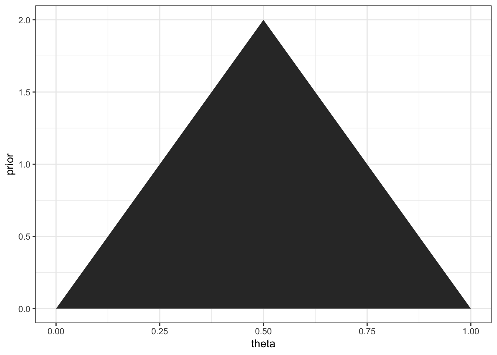
Now the likelihood for a small data set: 1 success out of 4 trials.
This is the trickiest part. dbinom(x, size = n, prob = theta) will calculate
the probability that we want for a given value of x, n, and theta. We
want to do this
- for each value of
theta - but using the same values for
xandneach time
purrr:map_dbl() helps us tell R how to do this. Each value of
theta gets plugged in for .x and a vector of numbers (dbl stands for
double – computer talk for real number) is returned.
library(purrr)
x <- 1; n <- 4
CoinsGrid <-
expand.grid(
theta = seq(0, 1, by = 0.001)
) %>%
mutate(
prior = dtriangle(theta), # triangle distribution
likelihood = map_dbl(theta, ~ dbinom(x = x, size = n, .x))
)
gf_area( prior ~ theta, data = CoinsGrid, alpha = 0.3) %>%
gf_area( likelihood ~ theta, data = CoinsGrid, alpha = 0.3, fill = "green") 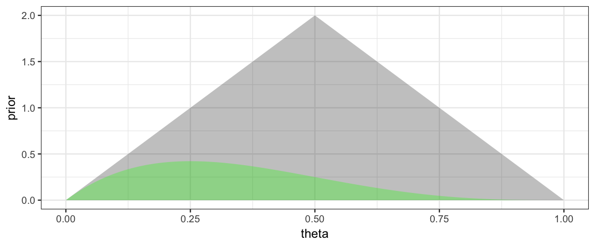
Note: Likelihoods are NOT pmfs or pdfs, so the total area under a likelihood function is usually not 1. We can make a normalized version for the purpose of plotting. (Recall, we will normalize the posterior at the end anyway, so it is fine if the likelihood is off by a constant multiple at this point in the process.) We do this by dividing by sum of the likelihoods and by the width of the spaces between grid points.
library(purrr)
x <- 1; n <- 4
CoinsGrid <-
expand.grid(
theta = seq(0, 1, by = 0.001)
) %>%
mutate(
prior = dtriangle(theta), # triangle distribution
likelihood = map_dbl(theta, ~ dbinom(x = x, size = n, .x)),
likelihood1 = likelihood / sum(likelihood) / 0.001 # "normalized"
)
gf_area( prior ~ theta, data = CoinsGrid, alpha = 0.3) %>%
gf_area( likelihood1 ~ theta, data = CoinsGrid, alpha = 0.3, fill = "green") 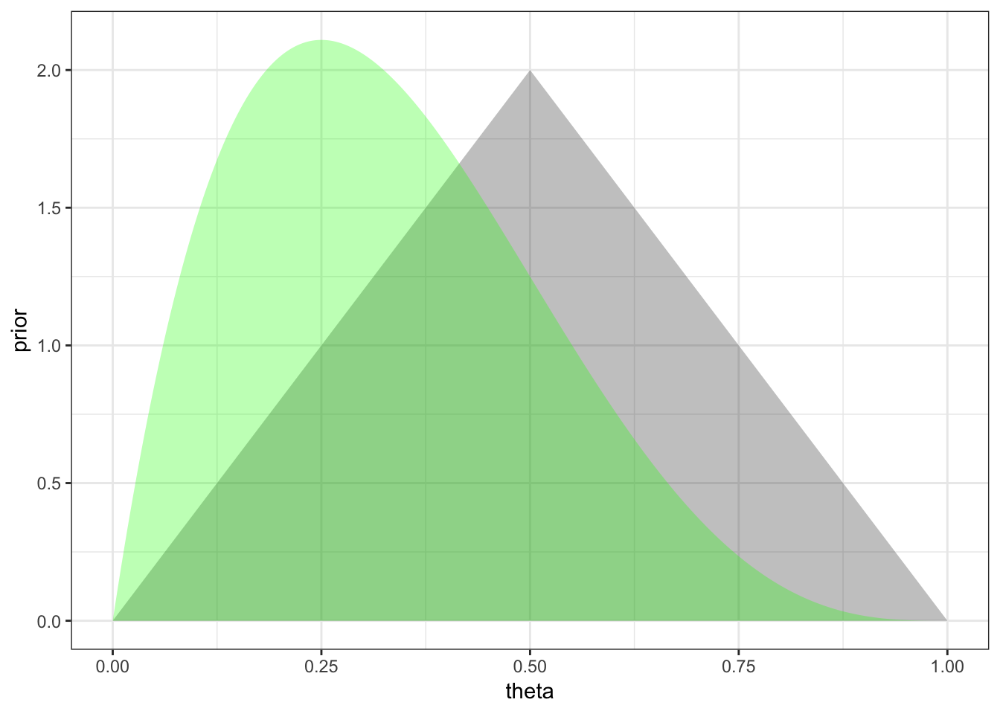
The hardest part of the coding (computing the likelihood) is now done. Getting the posterior is as simple as computing a product.
library(purrr)
x <- 1; n <- 4
CoinsGrid <-
expand.grid(
theta = seq(0, 1, by = 0.001)
) %>%
mutate(
prior = dtriangle(theta), # triangle distribution
likelihood = map_dbl(theta, ~ dbinom(x = x, size = n, .x)),
likelihood1 = likelihood / sum(likelihood) / 0.001, # "normalized"
posterior0 = prior * likelihood, # unnormalized
posterior = posterior0 / sum(posterior0) / 0.001 # normalized
)
gf_area( prior ~ theta, data = CoinsGrid, alpha = 0.3) %>%
gf_area( likelihood1 ~ theta, data = CoinsGrid, alpha = 0.3, fill = "green") %>%
gf_area( posterior ~ theta, data = CoinsGrid, alpha = 0.3, fill = "steelblue") 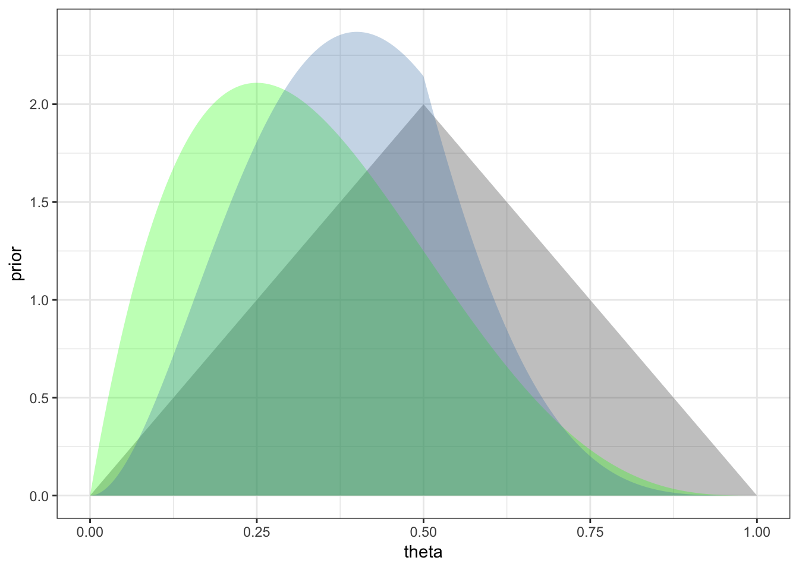
gf_line( prior ~ theta, data = CoinsGrid) %>%
gf_line( likelihood1 ~ theta, data = CoinsGrid, color = "green") %>%
gf_line( posterior ~ theta, data = CoinsGrid, color = "steelblue") 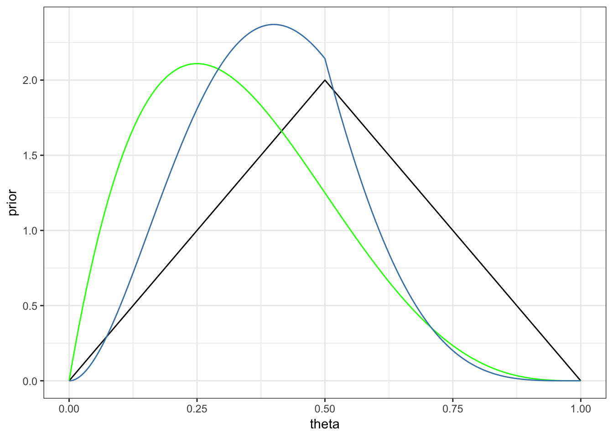
5.2.2 HDI from the grid
The CalvinBayes packages includes a function hdi_from_grid() to compute
highest density intervals from a grid.
The basic idea of the algorithm used is to
sort the grid by the posterior values.
The mode will be at the end of the list, and the
“bottom 95%” will be the HDI (or some other percent if we choose a
different level).
This method works as long as the posterior is unimodal, increasing to the mode
from either side.
hdi_from_grid() is slightly more complicated because it handles things like
multiple parameters and performs some standardization (so we can work with
kernels, for example). It does assume that the grid is uniform (ie, evenly
spaced).
We simply provide
- the data frame containing our grid calculations,
pars: the name of the parameter (or parameters) for which we want intervals (default is the first column in the grid),prob: the probability we want in covered by our interval (0.95 by default),posterior: the name of the column containing the posterior kernel values ("posterior"by default)
library(CalvinBayes)
hdi_from_grid(CoinsGrid, pars = "theta", prob = 0.95)| param | lo | hi | prob | height | mode_height | mode |
|---|---|---|---|---|---|---|
| theta | 0.098 | 0.681 | 0.9501 | 0.4833 | 2.37 | 0.4 |
With this information in hand, we can add a representation of the 95% HDI to our plot.
HDICoins <- hdi_from_grid(CoinsGrid, pars = "theta", prob = 0.95)
gf_line(posterior ~ theta, data = CoinsGrid) %>%
gf_hline(yintercept = ~height, data = HDICoins,
color = "red", alpha = 0.5) %>%
gf_pointrangeh(height ~ mode + lo + hi, data = HDICoins,
color = "red", size = 1) %>%
gf_labs(caption = "posterior mode and 95% HPI indicated in red")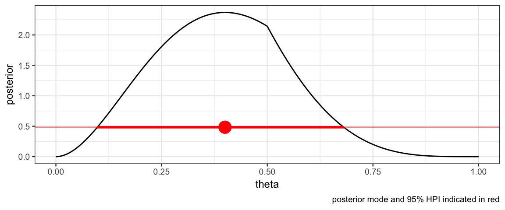
5.2.3 Automating the grid
Note: This function is a bit different from CalvinBayes::BernGrid().
MyBernGrid <- function(
x, n, # x successes in n tries
prior = dunif,
resolution = 1000, # number of intervals to use for grid
...) {
Grid <-
expand.grid(
theta = seq(0, 1, length.out = resolution + 1)
) %>%
mutate( # saving only the normalized version of each
prior = prior(theta, ...),
prior = prior / sum(prior) * resolution,
likelihood = dbinom(x, n, theta),
likelihood = likelihood / sum(likelihood) * resolution,
posterior = prior * likelihood,
posterior = posterior / sum(posterior) * resolution
)
H <- hdi_from_grid(Grid, pars = "theta", prob = 0.95)
gf_line(prior ~ theta, data = Grid, color = ~"prior",
size = 1.15, alpha = 0.8) %>%
gf_line(likelihood ~ theta, data = Grid, color = ~"likelihood",
size = 1.15, alpha = 0.7) %>%
gf_line(posterior ~ theta, data = Grid, color = ~"posterior",
size = 1.15, alpha = 0.6) %>%
gf_pointrangeh(
height ~ mode + lo + hi, data = H,
color = "red", size = 1) %>%
gf_labs(title = "Prior/Likelihood/Posterior",
subtitle = paste("Data: n =", n, ", x =", x)) %>%
gf_refine(
scale_color_manual(
values = c(
"prior" = "forestgreen",
"likelihood" = "blue",
"posterior" = "red"),
breaks = c("prior", "likelihood", "posterior")
)) %>%
print()
invisible(Grid) # return the Grid, but don't show it
}This function let’s us quickly explore several scenarios and compare the results.
- How does changing the prior affect the posterior?
- How does changing the data affect the posterior?
library(triangle)
MyBernGrid(1, 4, prior = dtriangle, a = 0, b = 1, c = 0.5)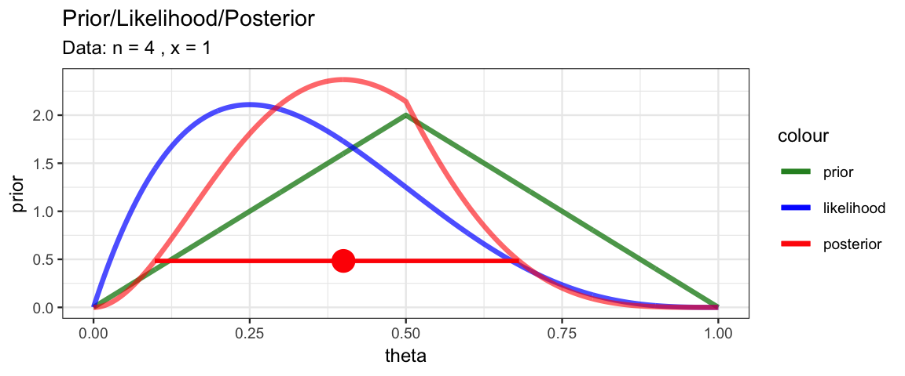
MyBernGrid(1, 4, prior = dunif)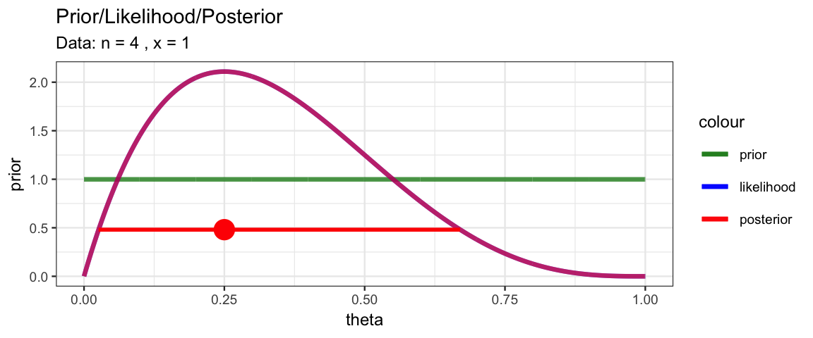
MyBernGrid(10, 40, prior = dtriangle, a = 0, b = 1, c = 0.5)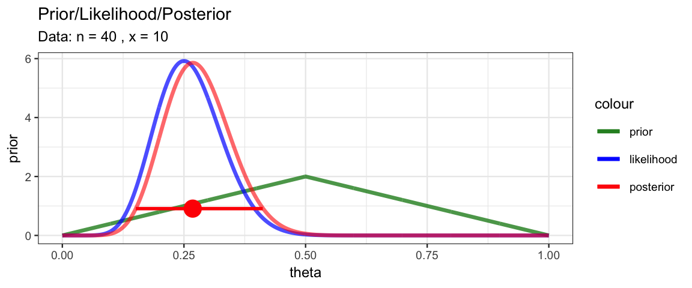
MyBernGrid(10, 40, prior = dunif)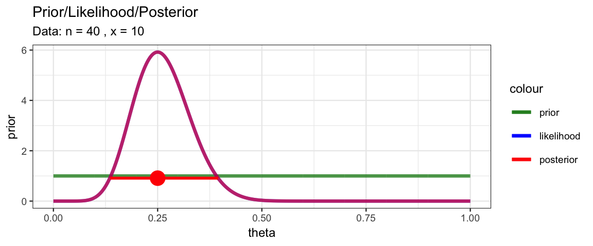
MyBernGrid(1, 4, prior = dtriangle, a = 0, b = 1, c = 0.8)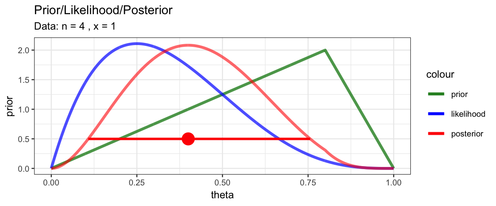
MyBernGrid(10, 40, prior = dtriangle, a = 0, b = 1, c = 0.8)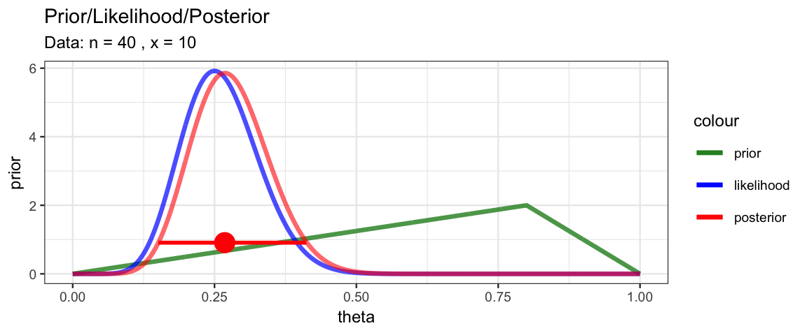
MyBernGrid(10, 40, prior = dbeta, shape1 = 25, shape2 = 12)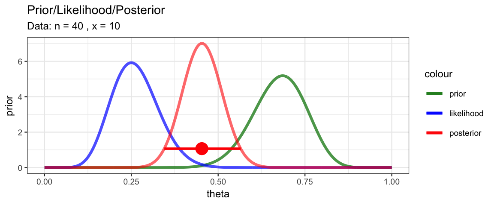
5.3 Working on the log scale
Very often it is numerically better to work on the log scale, computing the logs of the prior, likelihood, and posterior. There are at least two reasons for this:
- Likelihoods are often very small, especially if there is a lot of data. (Even with the most credible parameter values, the probability of getting exactly the data set that was observed is very low.)
- Likelihoods often involve products and exponentiation. Take logarithms turns these into sums and products. In fact, we can often compute these logs without first computing the prior, likelihood, or posterior. (It depends on the form of those functions.)
Let’s redo our previous example working on the log scale until the very end.
x <- 1; n <- 4
CoinsGridLog <-
expand.grid(
theta = seq(0, 1, by = 0.001)
) %>%
mutate(
logprior = log(dtriangle(theta, 0, 1)), # triangle distribution
loglik =
map_dbl(theta, ~ dbinom(x = x, size = n, prob = .x, log = TRUE)),
logpost = logprior + loglik,
posterior = exp(logpost),
posterior1 = posterior / sum(posterior, na.rm = TRUE)
)
gf_line(posterior1 ~ theta, data = CoinsGridLog)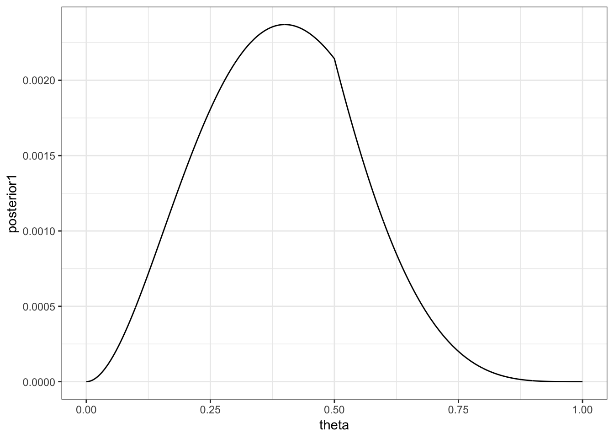
5.4 Discrete Parameters
Most of the parameters we will encounter will be able to take on all values in some interval. If we have parameter that can only take on a discrete set of values, then the grid method is exact if we make a grid point for each of those values. Usually we think of parameters taking on numerical values, but here is an example where a parameter takes on categorical labels for values.
Suppose we have a medical test for a disease and we know the following information.
- Only 1 person in 1000 has the disease in our population of interest
- If a person is healthy, the probability that the test will be correct is 97%. (97% = specificity = true negative rate)
- If a person is diseased, the probability that the test will be correct is 99%. (99% = sensitivity = true positive rate)
If a person is tested and the test comes back “positive” (indicating disease), what is the probability that the person actually has the disease?
Our parameter that we want to estimate is disease status, which can take on only two possible values: healthy or diseased.
Disease_Grid <-
tibble(
status = c("healthy", "sick"),
prior = c(999/1000, 1/1000)
)
Disease_Grid| status | prior |
|---|---|
| healthy | 0.999 |
| sick | 0.001 |
Now let’s add in the likelihood and posterior information assuming a positive test result.
Disease_Grid <-
tibble(
status = c("healthy", "sick"),
prior = c(999/1000, 1/1000),
likelihood = c(.03, .99),
posterior = prior * likelihood,
posterior1 = posterior / sum(posterior)
)
Disease_Grid| status | prior | likelihood | posterior | posterior1 |
|---|---|---|---|---|
| healthy | 0.999 | 0.03 | 0.030 | 0.968 |
| sick | 0.001 | 0.99 | 0.001 | 0.032 |
So we have updated our belief from a 0.1% chance the person has the disease to a 3.2$ chance that they have the disease. That’s a sizable increase, but the person is still most likely healthy, not diseased.
5.5 Exercises
More testing.
- Suppose that the population consists of 100,000 people. Compute how many people would be expected to fall into each cell of Table 5.4 on page 104 of DBDA2e. (To compute the expected number of people in a cell, just multiply the cell probability by the size of the population.)
You should find that out of 100,000 people, only 100 have the disease, while 99,900 do not have the disease. These marginal frequencies instantiate the prior probability that \(p(\theta = \frown) = 0.001\). Notice also the cell frequencies in the column \(\theta = \frown\), which indicate that of 100 people with the disease, 99 have a positive test result and 1 has a negative test result. These cell frequencies instantiate the hit rate of 0.99. Your job for this part of the exercise is to fill in the frequencies of the remaining cells of the table.
- Take a good look at the frequencies in the table you just computed for the previous part. These are the so-called “natural frequencies” of the events, as opposed to the somewhat unintuitive expression in terms of conditional probabilities (Gigerenzer & Hoffrage, 1995). From the cell frequencies alone, determine the proportion of people who have the disease, given that their test result is positive.
Your answer should match the result from applying Bayes’ rule to the probabilities.
Now we’ll consider a related representation of the probabilities in terms of natural frequencies, which is especially useful when we accumulate more data. This type of representation is called a “Markov” representation by Krauss, Martignon, and Hoffrage (1999). Suppose now we start with a population of \(N = 10,000,000\) people. We expect 99.9% of them (i.e., 9,990,000) not to have the disease, and just 0.1% (i.e., 10,000) to have the disease. Now consider how many people we expect to test positive. Of the 10,000 people who have the disease, 99%, (i.e., 9,900) will be expected to test positive. Of the 9,990,000 people who do not have the disease, 5% (i.e., 499,500) will be expected to test positive. Now consider re-testing everyone who has tested positive on the first test. How many of them are expected to show a negative result on the re-test?
What proportion of people who test positive at first and then negative on retest, actually have the disease? In other words, of the total number of people at the bottom of the diagram in the previous part (those are the people who tested positive then negative), what proportion of them are in the left branch of the tree? How does the result compare with your answer to Exercise 5.1?
Suppose we have a test with a 97% specificity and a 99% sensitivity just like in Section 5.4. Now suppose that a random person is selected, has a first test that is positive, then is retested and has a second test that is negative.
Taking into account both tests, and assuming the results of the two tests are independent, what is the probability that the person has the disease?Hint: We can use the the posterior after the first test as a prior for the second test. Be sure to keep as many decimal digits as possible (use R and don’t round intermediate results).
Note: In this problem we are assuming the the results of the two tests are independent, which might not be the case for some medical tests.
Consider again the disease and diagnostic test of the previous exercise and Section 5.4.
Suppose that a person selected at random from the population gets the test and it comes back negative. Compute the probability that the person has the disease.
- The person then gets re-tested, and on the second test the result is positive. Compute the probability that the person has the disease.
How does the result compare with your answer in the previous exercise?
Modify
MyBernGrid()so that it takes an argument specifying the probability for the HDI. Use it to create a plot showing 50% HDI for theta using a symmetric triangle prior and data consisting of 3 success and 5 failures.
Let’s try the grid method for a model with two parameters. Suppose we want to estimate the mean and standard deviation of the heights of 21-year-old American men or women (your choice which group). First, lets get some data.
library(NHANES) Men <- NHANES %>% filter(Gender == "male", Age == 21) Women <- NHANES %>% filter(Gender == "female", Age == 21)Likelihood Our model is that heights are normally distributed with mean \(\mu\) and standard deviation \(\sigma\):
Prior. For our prior, let’s use something informed just a little bit by what we know about people (we could do better with other priors, but that’s not our goal at the moment):
- the mean height is somewhere between 5 and 7 feet (let’s use 150 and 200 cm which are close to that)
- the standard deviation is positive, but no more than 20 cm (so 95% of people are within 40 cm (~ 16 inches) of average – that seems like a pretty safe bet).
- we will use a uniform prior over these ranges (even though you probably believe that some parts of the ranges are much more credible than others).
So our model is \[\begin{align*} \mathrm{Height} & \sim {\sf Norm}(\mu, \sigma) \\ \mu & \sim {\sf Unif}(150, 200) \\ \sigma & \sim {\sf Unif}(0, 20) \end{align*}\]
Grid. Use a grid that has 200-500 values for each parameter. Fill in the ?? below to create and update your grid.
Notes:
- It is more numerically stable to work on the log-scale as much as possible,
- You may normalize if you want to, but it isn’t necessary for this problem.
library(purrr) Height_Grid <- expand.grid( mu = seq(??, ??, ?? = ??), sigma = seq(??, ??, ?? = ??) ) %>% filter(sigma != 0) %>% # remove sigma = 0 mutate( prior = ??, logprior = ??, loglik = map2_dbl(mu, sigma, ~ ?? ) # use .x for mu and .y for sigma logpost = logprior + loglik, posterior = exp(logpost) )Once you have created and updated your grid, you can visualize your posterior using a command like this (use
gf_lims()if you want to zoom in a bit):gf_tile(posterior ~ mu + sigma, data = Height_Grid) %>% gf_contour(posterior ~ mu+ sigma, data = Height_Grid, color = "yellow")Now answer the following questions.
Using the picture you just created, what would you say are credible values for \(\mu\) and for \(\sigma\)?
Now use
hdi_from_grid()to compute a 90% highest density (posterior) intervals for each parameter. Do those make sense when you compare to the picture?Create a plot showing the posterior distribution for \(\mu\) and a 90% HDI for \(\mu\). [Hint: how can you get a grid for the marginal distribution of \(\mu\) from the grid for \(\mu\) and \(\sigma\)?]
Redo the previous problem using a triangle prior for each parameter. You may choose where to put the peak of the triangle.
Bob plays basketball.
He shoots 70% of his shots from 2-point range and makes 48% of these shots. He shoots 30% of his shots from 3-point range and makes 32% of these shots. Joe just made a shot. What is the probability that it was a 3-point shot?Do this problem twice. The first time, use probability rules, carefully denoting the probabilities involved. (For any number that appears, I should be able to tell from your notation where it came from.) The second time, use the “grid method”.
Alice has 3 hats labeled with the letters H, A, and T. In each hat are marbles of various colors.
Hat White marbles Red marbles Yellow marbles H 4 10 6 A 6 12 2 T 5 3 2 Alice randomly selects a hat by flipping two coins. If both are heads, she chooses hat H. If both are tails, she chooses hat T. If there is one head and one tail, she chooses hat A. Once that hat is selected, she draws out two marbles.
If the two marbles are both white, what is the probability that the hat was hat A?
If there is one red marble and one yellow marble, what is the probability that the hat was hat A?
If the two marbles are the same color, what is the probability that the hat was hat A?
5.6 Footnotes
There are other ways to do this, but
expand.grid()will work when we have more than one parameter, so we’ll start using it already in the simpler case of a single parameter.↩